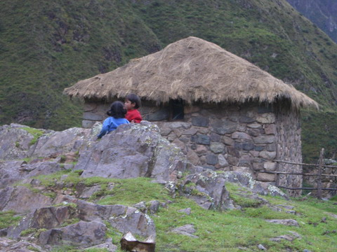

peru
the inca trail
after a number of packed bus rides (i mean PACKED) and a hike around where the road was collapsing into the river we finally made it to the start of the inca trail. hoorah!
day one was reasonably flat with the occasional up and down. though there were a zillion people coming in on the buses we didn't see much people on the trail and had plently of times with just the two of us.
our group camped for the first night at the bottom of the first climb. little did we know what we had to do tomorrow...
 great views back down through the valley we had hiked through during the day.
great views back down through the valley we had hiked through during the day.
our first night porter vs trekker football game was intently watched by a couple of locals.
day two started the real inca trail business. a reasonable incline with endless cool stone steps.
and half way through the big climb we meet this group. a bunch of ladies who have hiked all this way in to sell drinks. madness!!
here's the crux of the trail. dead womans pass. i just cringe to remembering it... the saddle point, wayyy off in the distance on the right hand side, is at 4100m. by the end of it every step was killing us. i don't think i've ever found it so hard to just take a step. who knows how people climb everest (8800m)
here's lake australia! well sort of. it's upsidedown from this angle. even from the right angle tasmania is under adelaide for some reason. it looked better in real life. probably due to oxygen deprivation.
the temple of sayacmarca, surrounded on three sides by deep valleys provides some of the best views on the inca trail. when it's not cloudy that is. though we didn't have the view it was pretty surreal to be in a ancient temple on a ridge line surrounded on three sides by clouds. from time to time the clouds cleared off to one side and we could see some other temples
in the valley below.the inca trail was pretty hard going always up and down and up and down. the constant drizzle didn't help much either as it made the rocks quite slippery. luckily we had picked up some cool bamboo "walking sticks" before we started.
on the final day of the trail the clouds lifted nd we started getting some cool views of the other sides of the valleys. awesome ridge lines.
the final main temple, before machu picchu, is huinay huayna. we past maybe a dozen sets of ruins of varying sizes and saw a lot more than i expected.
huinay huayna had some quite realisitic, dare i say it, dashingly handsome, statues. they reminded me of one we saw in agora.
after quite a debacle we made it to machu picchu (we had to walk around a bit because of a landslide). however the detour, the drizzle and the cold were worth it; machu picchu is huge and awesome. it must have been quite a happening place back in the day.
the best part i thought were the ruins of huayna picchu on the very top of the mountain you can see in the last last picture on the right. some totally wicked views looking back down onto machu picchu.
and i tell you what. the guys who built it were totally crazy. sheer thousand foot drops on all sides without a guard rail in sight. to the left of me you can see where ren was sitting in the last picture next to an obelisk. no, not that obelisk.
{kind=link}